[Toàn Chương] LM10 — Learning Module 10 Valuing a Derivative Using a One-Period Binomial Model
Volume 7: Derivatives
Learning Module 10 Valuing a Derivative Using a One-Period Binomial Model
Part 1/2: Introduction (PDF Pages 227–242)
Tập 7: Công cụ Phái sinh (Derivatives)
Học phần 10: Xác định Giá trị Công cụ Phái sinh Sử dụng Mô hình Nhị thức Một Kỳ (Valuing a Derivative Using a One-Period Binomial Model)
Phần 1/2: Giới thiệu (Trang PDF 227–242)
L E A R N I N G M O D U L E
H Ọ C P H Ầ N
10
10
Valuing a Derivative Using a One-Period Binomial Model
Xác định Giá trị Công cụ Phái sinh Sử dụng Mô hình Nhị thức Một Kỳ (Valuing a Derivative Using a One-Period Binomial Model)
LEARNING OUTCOMES
MỤC TIÊU HỌC TẬP (LEARNING OUTCOMES)
Mastery The candidate should be able to:
| Mức độ thành thạo Ứng viên cần có khả năng: |
|---|
| giải thích cách xác định giá trị một công cụ phái sinh bằng cách sử dụng mô hình nhị thức một kỳ (one-period binomial model) |
| mô tả khái niệm trung lập với rủi ro (risk neutrality) trong việc định giá công cụ phái sinh |
explain how to value a derivative using a one-period binomial model describe the concept of risk neutrality in derivatives pricing
GIỚI THIỆU (INTRODUCTION)
INTRODUCTION
1
1
Earlier lessons explained how the principle of no arbitrage and replication can be used to value and price derivatives. The put–call parity relationship linked put option, call option, underlying asset, and risk-free asset prices. This relationship was extended to forward contracts given the equivalence of an underlying asset position and a long forward contract plus a risk-free bond.
Các bài học trước đã giải thích cách thức nguyên tắc không kinh doanh chênh lệch giá (no arbitrage) và mô phỏng (replication) có thể được sử dụng để xác định giá trị và định giá các công cụ phái sinh. Mối quan hệ ngang giá quyền chọn bán–quyền chọn mua (put–call parity) đã liên kết giá quyền chọn bán, giá quyền chọn mua, giá tài sản cơ sở, và giá tài sản phi rủi ro. Mối quan hệ này đã được mở rộng sang các hợp đồng kỳ hạn dựa trên sự tương đương giữa một vị thế tài sản cơ sở và một hợp đồng mua kỳ hạn cộng với một trái phiếu phi rủi ro.
Forward commitments can be priced without making assumptions about the underlying asset’s price in the future. However, the pricing of options and other contingent claims requires a model for the evolution of the underlying asset’s future price. The first lesson introduces the widely-used binomial model to value European put and call options. A simple one-period version is introduced, which may be extended to multiple periods and used to value more complex contingent claims. In the second lesson, we demonstrate the use of risk-neutral probabilities in derivatives pricing.
Các cam kết kỳ hạn (forward commitments) có thể được định giá mà không cần đưa ra các giả định về mức giá trong tương lai của tài sản cơ sở. Tuy nhiên, việc định giá quyền chọn và các quyền đòi nợ có điều kiện (contingent claims) khác đòi hỏi phải có một mô hình cho sự tiến triển của mức giá tương lai của tài sản cơ sở. Bài học đầu tiên giới thiệu mô hình nhị thức (binomial model) được sử dụng rộng rãi để xác định giá trị các quyền chọn bán và quyền chọn mua kiểu châu Âu. Một phiên bản một kỳ (one-period version) đơn giản được giới thiệu, phiên bản này có thể được mở rộng ra nhiều kỳ (multiple periods) và được sử dụng để xác định giá trị các quyền đòi nợ có điều kiện phức tạp hơn. Trong bài học thứ hai, chúng ta chứng minh việc sử dụng các xác suất trung lập với rủi ro (risk-neutral probabilities) trong định giá công cụ phái sinh.
LEARNING MODULE OVERVIEW
TỔNG QUAN HỌC PHẦN (LEARNING MODULE OVERVIEW)
-
The one-period binomial model values contingent claims, such as options, and assumes the underlying asset will either increase by Ru (up gross return) or decrease by Rd (down gross return) over a single period that corresponds to the expiration of the derivative contract.
-
The binomial model combines an option with the underlying asset to create a risk-free portfolio where the proportion of the option to the underlying security is determined by a hedge ratio.
-
Mô hình nhị thức một kỳ (one-period binomial model) xác định giá trị các quyền đòi nợ có điều kiện, chẳng hạn như quyền chọn, và giả định rằng tài sản cơ sở sẽ hoặc tăng lên theo hệ số $R^u$ (tỷ suất sinh lợi gộp khi giá tăng – up gross return) hoặc giảm xuống theo hệ số $R^d$ (tỷ suất sinh lợi gộp khi giá giảm – down gross return) qua một kỳ duy nhất tương ứng với thời điểm đáo hạn của hợp đồng phái sinh.
-
Mô hình nhị thức kết hợp một quyền chọn với tài sản cơ sở để tạo ra một danh mục đầu tư phi rủi ro (risk-free portfolio), trong đó tỷ lệ giữa quyền chọn và chứng khoán cơ sở được xác định bởi một tỷ số phòng ngừa rủi ro (hedge ratio).
CFA Institute would like to thank Don Chance, PhD, CFA, for his contribution to this section, which includes material derived from material that appeared in Derivative Markets and Instruments , featured in the 2022 CFA® Program curriculum.
Viện CFA (CFA Institute) xin gửi lời cảm ơn đến Tiến sĩ Don Chance, CFA, vì những đóng góp của ông cho phần này, bao gồm nội dung bắt nguồn từ tài liệu đã xuất hiện trong bài đọc Derivative Markets and Instruments thuộc chương trình học CFA® Program năm 2022.
-
The hedged portfolio must earn the prevailing risk-free rate of return; otherwise, riskless arbitrage profit opportunities would be available.
-
Valuing a derivative via risk-free hedging is equivalent to computing the discounted expected payoff of the option using risk-neutral probabilities rather than actual probabilities.
-
Neither the actual (real-world) probabilities of underlying price increases or decreases nor the expected return of the underlying are required to price an option.
-
The one-period binomial model can be extended to multiple periods as well to value more complex contingent claims.
-
Danh mục đầu tư đã được phòng ngừa rủi ro (hedged portfolio) phải thu được mức lãi suất phi rủi ro hiện hành; nếu không, các cơ hội thu lợi nhuận kinh doanh chênh lệch giá phi rủi ro sẽ xuất hiện.
-
Việc xác định giá trị một công cụ phái sinh thông qua phòng ngừa rủi ro phi rủi ro (risk-free hedging) tương đương với việc tính toán kết quả thanh toán kỳ vọng được chiết khấu (discounted expected payoff) của quyền chọn bằng cách sử dụng các xác suất trung lập với rủi ro (risk-neutral probabilities) thay vì các xác suất thực tế (actual probabilities).
-
Cả xác suất thực tế (trong thế giới thực) của việc tăng hay giảm giá tài sản cơ sở lẫn tỷ suất sinh lợi kỳ vọng của tài sản cơ sở đều không cần thiết để định giá một quyền chọn.
-
Mô hình nhị thức một kỳ cũng có thể được mở rộng ra nhiều kỳ để xác định giá trị các quyền đòi nợ có điều kiện phức tạp hơn.
LEARNING MODULE SELF-ASSESSMENT
TỰ ĐÁNH GIÁ HỌC PHẦN (LEARNING MODULE SELF-ASSESSMENT)
These initial questions are intended to help you gauge your current level of understanding of this learning module.
Những câu hỏi ban đầu này nhằm giúp bạn tự đánh giá mức độ hiểu biết hiện tại của mình về học phần này.
- Which of the following statements most correctly describes the binomial model for valuing options?
-
A. The model uses the actual probabilities associated with stock price moves up or down.
-
B. The model assumes that a risk-free portfolio can be created by combining the option and the underlying according to a hedge ratio.
-
C. The model is similar to those used for valuing forward and futures contracts.
- Phát biểu nào sau đây mô tả đúng nhất về mô hình nhị thức dùng để xác định giá trị quyền chọn?
-
A. Mô hình sử dụng các xác suất thực tế gắn liền với các biến động tăng hoặc giảm giá cổ phiếu.
-
B. Mô hình giả định rằng một danh mục đầu tư phi rủi ro có thể được tạo ra bằng cách kết hợp quyền chọn và tài sản cơ sở theo một tỷ số phòng ngừa rủi ro (hedge ratio).
-
C. Mô hình tương tự như các mô hình được sử dụng để xác định giá trị các hợp đồng kỳ hạn và hợp đồng tương lai.
Solution:
Lời giải:
B is correct. Unlike forward commitments, contingent claims, such as options, require that we model the future price behavior of the underlying asset because unlike forwards and futures, options have asymmetric payoffs. By modeling the future price behavior, the option and its underlying asset can be combined into a risk-free portfolio. The cost of this portfolio, where the proportion of the option and the underlying asset is set by a hedge ratio, determines the no-arbitrage price of the option. A is incorrect because the actual probabilities of up and down price moves do not factor into the model. C is incorrect because options have asymmetric payoffs, so they must be modeled differently than symmetric-payoff instruments like forward and futures contracts.
B là đáp án đúng. Không giống như các cam kết kỳ hạn, các quyền đòi nợ có điều kiện, chẳng hạn như quyền chọn, đòi hỏi chúng ta phải mô hình hóa hành vi giá trong tương lai của tài sản cơ sở bởi vì không giống như hợp đồng kỳ hạn và hợp đồng tương lai, quyền chọn có kết quả thanh toán bất đối xứng (asymmetric payoffs). Bằng cách mô hình hóa hành vi giá trong tương lai, quyền chọn và tài sản cơ sở của nó có thể được kết hợp thành một danh mục đầu tư phi rủi ro. Chi phí của danh mục đầu tư này, nơi tỷ lệ giữa quyền chọn và tài sản cơ sở được thiết lập bởi một tỷ số phòng ngừa rủi ro, sẽ quyết định mức giá không kinh doanh chênh lệch giá của quyền chọn. A không đúng vì các xác suất thực tế của biến động giá tăng và giảm không được đưa vào mô hình. C không đúng vì quyền chọn có kết quả thanh toán bất đối xứng, nên chúng phải được mô hình hóa khác với các công cụ có kết quả thanh toán đối xứng như hợp đồng kỳ hạn và hợp đồng tương lai.
- When using a one-period binomial model to price a call option, an increase in the actual probability of an upward move in the underlying asset will result in the call option price:
-
A. decreasing.
-
B. staying the same.
-
C. increasing.
- Khi sử dụng mô hình nhị thức một kỳ để định giá một quyền chọn mua, sự gia tăng trong xác suất thực tế của một biến động tăng giá ở tài sản cơ sở sẽ dẫn đến giá quyền chọn mua:
-
A. giảm xuống.
-
B. giữ nguyên không đổi.
-
C. tăng lên.
Solution:
Lời giải:
The correct answer is B. The call option price will stay the same. The actual (real-world) probabilities of an up or a down price movement in a binomial model do not influence the (no-arbitrage) price of an option.
Đáp án đúng là B. Giá quyền chọn mua sẽ giữ nguyên không đổi. Các xác suất thực tế (trong thế giới thực) của một biến động tăng hoặc giảm giá trong mô hình nhị thức không ảnh hưởng đến mức giá (không kinh doanh chênh lệch giá) của một quyền chọn.
-
Identify which of the various factor changes has which effect on the no-arbitrage price of a put option based on the one-period binomial model:
-
The probability of an upward price A. Put option price remains the same movement, q , increases. 2. The spread between the up and down B. Put option price increases factor, Ru − Rd , increases. 3. The risk-neutral probability of price, C. Put option price decreases π, increases. Solution: 1. The correct answer is A. The probability of an upward price movement, q , has no impact on value in the one-period binomial option pricing model. Thus, this change would not have any impact on the price of a put option, and the price of the put option would remain the same. 2. The correct answer is B. The spread between the up and down factor, Ru – Rd , increases the range of potential prices, which increases the likelihood that the option ends up in the money. Thus, this change would increase the price of a put option. 3. The correct answer is C. The risk-neutral probability of price, π, captures the probability of the price of the underlying increasing. As π increases, the likelihood of the put option ending up in the money decreases.
-
A one-period binomial model assumes that the price of the underlying asset can change from $16.00 today to either $20.00 or $12.00 at the end of the period. If the risk-free rate of return over the period is 5%, which of the following choices is closest to the risk-neutral probability of a price increase? A. 0.50 B. 0.60 C. 0.625
- Xác định sự thay đổi nhân tố nào sau đây có tác động nào lên mức giá không kinh doanh chênh lệch giá của một quyền chọn bán dựa trên mô hình nhị thức một kỳ:
| Thay đổi của nhân tố | Tác động lên giá quyền chọn bán |
|---|---|
| 1. Xác suất thực tế của biến động tăng giá, $q$, tăng lên. | A. Giá quyền chọn bán giữ nguyên không đổi |
| 2. Độ chênh lệch (spread) giữa hệ số tăng và hệ số giảm, $R^u - R^d$, tăng lên. | B. Giá quyền chọn bán tăng lên |
| 3. Xác suất tăng giá trung lập với rủi ro (risk-neutral probability), $\pi$, tăng lên. | C. Giá quyền chọn bán giảm xuống |
Lời giải:
Solution: B is correct. An increase from $16.00 to $20.00 or a decrease from $16.00 to $12.00 corresponds to: Ru = $20.00/$16.00 = 1.25 and Rd = $12.00/$16.00 = 0.75. Using the risk-neutral probability (π) of a price increase: π = (1 + r – Rd )/( Ru – Rd ) = (1 + 0.05 – 0.75)/(1.25 – 0.75) = 0.3/0.5 = 0.60.
-
Đáp án đúng là A. Xác suất thực tế của biến động tăng giá, $q$, không có tác động lên giá trị trong mô hình định giá quyền chọn nhị thức một kỳ. Do đó, sự thay đổi này sẽ không có bất kỳ tác động nào lên giá của quyền chọn bán, và giá của quyền chọn bán sẽ giữ nguyên không đổi.
-
Đáp án đúng là B. Độ chênh lệch giữa hệ số tăng và hệ số giảm, $R^u - R^d$, làm tăng phạm vi của các mức giá tiềm năng, từ đó làm tăng khả năng quyền chọn kết thúc ở trạng thái có lời (in the money). Do đó, sự thay đổi này sẽ làm tăng giá của quyền chọn bán.
-
Đáp án đúng là C. Xác suất trung lập với rủi ro của giá, $\pi$, nắm bắt xác suất giá của tài sản cơ sở tăng lên. Khi $\pi$ tăng lên, khả năng quyền chọn bán kết thúc ở trạng thái có lời sẽ giảm xuống (vì $1 - \pi$ giảm).
-
Một mô hình nhị thức một kỳ giả định rằng giá của tài sản cơ sở có thể thay đổi từ $16,00 ngày hôm nay lên $20,00 hoặc xuống $12,00 vào cuối kỳ. Nếu tỷ suất sinh lợi phi rủi ro trong kỳ là 5%, lựa chọn nào sau đây gần nhất với xác suất trung lập với rủi ro của một sự tăng giá?
- A. 0,50
- B. 0,60
- C. 0,625
Lời giải:
B là đáp án đúng. Sự tăng giá từ $16,00 lên $20,00 hoặc giảm giá từ $16,00 xuống $12,00 tương ứng với:
Sử dụng công thức xác suất trung lập với rủi ro ($\pi$) của một sự tăng giá:
explain how to value a derivative using a one-period binomial model
2
ĐỊNH GIÁ QUYỀN CHỌN NHỊ THỨC (BINOMIAL VALUATION OF OPTIONS)
giải thích cách xác định giá trị một công cụ phái sinh bằng cách sử dụng mô hình nhị thức một kỳ (one-period binomial model)
The law of one price states that if the payoffs from any two assets (or portfolio of assets) at a given future time are identical in all possible scenarios, then the value of these two assets must also be identical today . Forward commitments offer symmetric payoffs at a predetermined price in the future, the value of which are independent of the future price behavior of the underlying asset.
Quy luật một giá (law of one price) phát biểu rằng nếu kết quả thanh toán từ hai tài sản bất kỳ (hoặc hai danh mục tài sản) tại một thời điểm nhất định trong tương lai là giống hệt nhau trong tất cả các kịch bản có thể xảy ra, thì giá trị của hai tài sản này cũng phải giống hệt nhau ngày hôm nay. Các cam kết kỳ hạn mang lại kết quả thanh toán đối xứng tại một mức giá đã xác định trước trong tương lai, có giá trị độc lập với hành vi giá tương lai của tài sản cơ sở.
The asymmetric payoff profile of options and other contingent claims makes valuation of these instruments more challenging. Assumptions about future prices are an important component in option valuation given the different payoffs under different scenarios whose likelihood changes over time. Option valuation therefore requires the specification of a model for the future (random) price behavior of the option’s underlying asset.
Hồ sơ kết quả thanh toán bất đối xứng của các quyền chọn và các quyền đòi nợ có điều kiện khác làm cho việc xác định giá trị của các công cụ này trở nên thách thức hơn. Các giả định về mức giá trong tương lai là một thành phần quan trọng trong việc xác định giá trị quyền chọn do có các kết quả thanh toán khác nhau dưới các kịch bản khác nhau mà xác suất xảy ra của chúng thay đổi theo thời gian. Do đó, việc xác định giá trị quyền chọn đòi hỏi phải xác lập một mô hình cho hành vi giá (ngẫu nhiên) trong tương lai của tài sản cơ sở của quyền chọn.
The binomial model is a common tool used to determine the no-arbitrage value of an option. The simplicity of this model makes it attractive, as we only need to make an assumption about the magnitude of the potential upward and downward price changes of the underlying asset in a future time period.
Mô hình nhị thức (binomial model) là một công cụ phổ biến được sử dụng để xác định giá trị không kinh doanh chênh lệch giá của một quyền chọn. Sự đơn giản của mô hình này làm cho nó trở nên hấp dẫn, bởi vì chúng ta chỉ cần đưa ra giả định về độ lớn của các mức thay đổi giá tiềm năng theo chiều hướng tăng lên và giảm xuống của tài sản cơ sở trong một khoảng thời gian tương lai.
3
3
THE BINOMIAL MODEL
MÔ HÌNH NHỊ THỨC (THE BINOMIAL MODEL)
explain how to value a derivative using a one-period binomial model
giải thích cách xác định giá trị một công cụ phái sinh bằng cách sử dụng mô hình nhị thức một kỳ (one-period binomial model)
The binomial model builds on a simple idea: Over a given period of time, the asset’s price will either go up ( u ) to S 1u > S 0 or go down ( d ) to S 1d < S 0. We do not need to know the future price in advance, because it is determined by the outcome of a random variable. The movement from S 0 to either S 1u or S 1d can be interpreted as the outcome of a Bernoulli trial.
Mô hình nhị thức được xây dựng dựa trên một ý tưởng đơn giản: Qua một khoảng thời gian nhất định, giá của tài sản sẽ hoặc đi lên (up – $u$) tới mức $S_1^u > S_0$ hoặc đi xuống (down – $d$) tới mức $S_1^d < S_0$. Chúng ta không cần phải biết trước mức giá trong tương lai, bởi vì nó được xác định bởi kết quả của một biến ngẫu nhiên. Sự dịch chuyển từ $S_0$ lên $S_1^u$ hoặc xuống $S_1^d$ có thể được diễn giải như kết quả của một phép thử Bernoulli (Bernoulli trial).
Let us denote q as the probability of an upward price movement and 1 − q as the probability of a downward price movement. With only two possible outcomes—the price either goes up or down—the sum of probabilities must equal 1. We will also find it useful to define the gross return from an up or a down price move as:
Hãy ký hiệu $q$ là xác suất của một biến động giá đi lên và $1 - q$ là xác suất của một biến động giá đi xuống. Với chỉ hai kết quả có thể xảy ra—giá hoặc đi lên hoặc đi xuống—tổng các xác suất phải bằng 1. Chúng ta cũng sẽ thấy hữu ích khi định nghĩa tỷ suất sinh lợi gộp (gross return) từ một biến động giá đi lên hoặc đi xuống như sau:
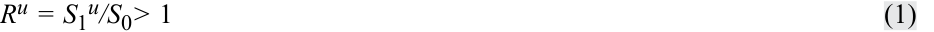
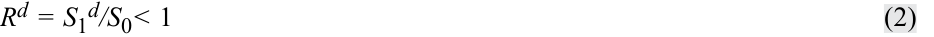
At first glance, it would appear that knowing q is crucial in determining the value of an option on any underlying asset. However, knowing q is not required; only specifying the values of S 1u and S 1d is needed. The difference between S 1u and S 1d measures the “spread” of possible future price outcomes. Specifying S 1u and S 1d (or Ru S 0 and Rd S 0) determines the volatility of the underlying asset, an important factor in valuing options as shown earlier. Simply stated, the size of the up and down price movements should match the underlying asset volatility, as shown in Exhibit 1.
Thoạt nhìn, có vẻ như việc biết được $q$ là yếu tố sống còn trong việc xác định giá trị của một quyền chọn trên bất kỳ tài sản cơ sở nào. Tuy nhiên, việc biết $q$ là không cần thiết; chúng ta chỉ cần xác định các giá trị của $S_1^u$ và $S_1^d$. Chênh lệch giữa $S_1^u$ và $S_1^d$ đo lường “độ trải rộng” (“spread”) của các kết quả giá có thể xảy ra trong tương lai. Việc xác định $S_1^u$ và $S_1^d$ (hay $R^u S_0$ và $R^d S_0$) sẽ quyết định độ biến động (volatility) của tài sản cơ sở, vốn là một nhân tố quan trọng trong việc xác định giá trị quyền chọn như đã chỉ ra trước đó. Nói một cách đơn giản, quy mô của các biến động giá đi lên và đi xuống phải khớp với độ biến động của tài sản cơ sở, như được thể hiện trong Bảng 1 (Exhibit 1).
Exhibit 1: Price Movement for the Underlying Asset
Bảng 1: Biến động Giá của Tài sản Cơ sở (Exhibit 1: Price Movement for the Underlying Asset)
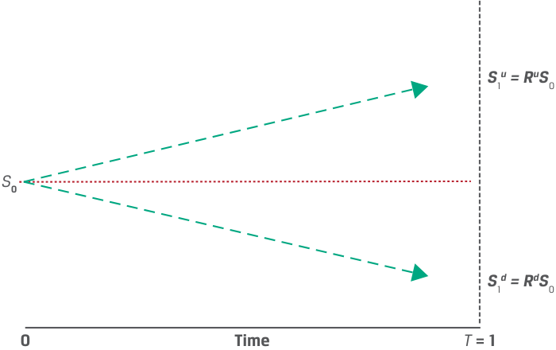
Chú thích hình ảnh: - Tại thời điểm $0$: Giá tài sản cơ sở là $S_0$. - Tại thời điểm $T = 1$: Giá tài sản cơ sở tăng lên $S_1^u = R^u S_0$ hoặc giảm xuống $S_1^d = R^d S_0$.
Binomial models may be extended to multiple periods where the underlying asset price can move up or down in each period. This extension creates a binomial tree, a powerful way to model more realistic price dynamics. A simple one-period binomial model is sufficient to introduce the pricing methodology and the required steps in the option pricing procedure.
Các mô hình nhị thức có thể được mở rộng ra nhiều kỳ, nơi giá tài sản cơ sở có thể đi lên hoặc đi xuống trong mỗi kỳ. Sự mở rộng này tạo ra một cây nhị thức (binomial tree), một phương pháp mạnh mẽ để mô hình hóa các động thái giá thực tế hơn. Một mô hình nhị thức một kỳ đơn giản là đủ để giới thiệu phương pháp luận định giá và các bước cần thiết trong quy trình định giá quyền chọn.
PRICING A EUROPEAN CALL OPTION
ĐỊNH GIÁ QUYỀN CHỌN MUA KIỂU CHÂU ÂU (PRICING A EUROPEAN CALL OPTION)
4
4
explain how to value a derivative using a one-period binomial model
giải thích cách xác định giá trị một công cụ phái sinh bằng cách sử dụng mô hình nhị thức một kỳ (one-period binomial model)
Consider a one-year European call option with an exercise price ( X ) of €100. The underlying spot price ( S 0) is €80. The one-period binomial model corresponds to the option’s time to expiration of one year.
Hãy xem xét một quyền chọn mua kiểu châu Âu kỳ hạn 1 năm có giá thực hiện ($X$) là €100. Giá giao ngay của tài sản cơ sở ($S_0$) là €80. Mô hình nhị thức một kỳ tương ứng với thời gian đến khi đáo hạn của quyền chọn là 1 năm.
The binomial model specifies the possible values of the underlying asset in one year, where the option value is a known function of the value of the underlying asset. Further, we assume that S 1d < X < S 1u (i.e., the exercise price of the option [ X = €100] is between the value of the underlying in the two scenarios)—for example, setting S 1d = €60 and S 1u = €110. Then, Ru = 1.375 and Rd = 0.75. The value of the call option is as follows:
Mô hình nhị thức xác định các giá trị có thể có của tài sản cơ sở sau 1 năm, trong đó giá trị quyền chọn là một hàm số đã biết theo giá trị của tài sản cơ sở. Hơn nữa, chúng ta giả định rằng $S_1^d < X < S_1^u$ (tức là giá thực hiện của quyền chọn [$X = \text{€100}$] nằm giữa giá trị của tài sản cơ sở trong hai kịch bản)—ví dụ, đặt $S_1^d = \text{€60}$ và $S_1^u = \text{€110}$. Khi đó, $R^u = 1,375$ và $R^d = 0,75$. Giá trị của quyền chọn mua như sau:
-
Tại thời điểm $t = 0$, giá trị quyền chọn mua là $c_0$.
-
Tại thời điểm $t = 1$, giá trị quyền chọn mua là $c_1^u$ (nếu giá tài sản cơ sở tăng lên $S_1^u$) hoặc $c_1^d$ (nếu giá tài sản cơ sở giảm xuống $S_1^d$).
-
Biến động tăng lên $S_1^u$: Quyền chọn mua kết thúc ở trạng thái có lời (in-the-money)
-
At t = 0, the call option value is c 0 .
-
At t = 1, the call option value is either c 1u (if the underlying price rises to S 1u ) or c 1d (if the underlying price falls to S 1d ).
-
Up move to S 1u : Call option ends up in-the-money
-
c 1u = Max (0, S 1u − X ) = Max (0, €110 − €100) = €10.
-
Down move to S 1d : C all option expires out-of-the-money
-
c 1d = Max (0, S 1d − X ) = Max (0, €60 − €100) = 0.
- Biến động giảm xuống $S_1^d$: Quyền chọn mua hết hạn ở trạng thái lỗ (out-of-the-money)
Exhibit 2 summarizes the one-period binomial model and the value of the underlying asset and call option.
Bảng 2 (Exhibit 2) tóm tắt mô hình nhị thức một kỳ cùng giá trị của tài sản cơ sở và quyền chọn mua.
Exhibit 2: One-Period Binomial Option Pricing
Bảng 2: Định giá Quyền chọn Nhị thức Một Kỳ (Exhibit 2: One-Period Binomial Option Pricing)
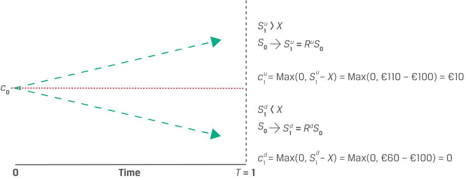
Chú thích hình ảnh: - Nhánh trên ($S_1^u > X$): $S_1^u = R^u S_0 \implies c_1^u = \text{Max}(0, S_1^u - X) = \text{Max}(0, \text{€110} - \text{€100}) = \text{€10}$. - Nhánh dưới ($S_1^d < X$): $S_1^d = R^d S_0 \implies c_1^d = \text{Max}(0, S_1^d - X) = \text{Max}(0, \text{€60} - \text{€100}) = 0$.
The only unknown value is c 0, which may be determined using replication and no-arbitrage pricing. That is, the value of both the option and its underlying asset in each future scenario may be used to construct a risk-free portfolio. For example, assume that at t = 0 we sell the call option at a price of c 0 and purchase h units of the underlying asset. Denoting the value of the portfolio as V , we have the following:
Giá trị duy nhất chưa biết là $c_0$, có thể được xác định bằng cách sử dụng phương pháp mô phỏng và định giá không kinh doanh chênh lệch giá. Nghĩa là, giá trị của cả quyền chọn và tài sản cơ sở của nó trong từng kịch bản tương lai có thể được sử dụng để xây dựng một danh mục đầu tư phi rủi ro. Ví dụ, giả sử rằng tại thời điểm $t = 0$, chúng ta bán quyền chọn mua tại mức giá $c_0$ và mua $h$ đơn vị tài sản cơ sở. Ký hiệu giá trị của danh mục đầu tư là $V$, chúng ta có:
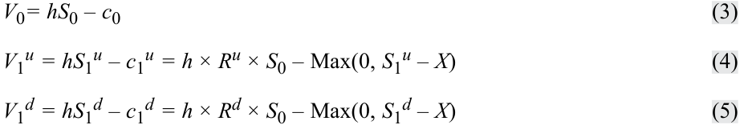
V 0 represents the initial portfolio investment in the portfolio, and V 1u and V 1d represent the portfolio value if the underlying price moves up or down, respectively. We must choose h so that V 1u = V 1d (i.e., the portfolio value is the same in either scenario). The value of the combination, V 1, will not change if the underlying asset price changes. For portfolio V 0, the impacts of the changes are as follows:
$V_0$ đại diện cho khoản đầu tư ban đầu vào danh mục đầu tư, còn $V_1^u$ và $V_1^d$ lần lượt đại diện cho giá trị danh mục đầu tư nếu giá tài sản cơ sở đi lên hoặc đi xuống. Chúng ta phải chọn $h$ sao cho $V_1^u = V_1^d$ (tức là giá trị danh mục đầu tư như nhau trong cả hai kịch bản). Giá trị của sự kết hợp này, $V_1$, sẽ không thay đổi khi giá tài sản cơ sở thay đổi. Đối với danh mục đầu tư $V_0$, tác động của những thay đổi như sau:
-
Biến động đi lên từ $S_0$ tới $S_1^u$ theo hệ số $R^u$:
-
Giá trị tài sản thay đổi từ €80 lên €110 theo hệ số 1,375, hay tăng 37,5%.
-
Quyền chọn mua kết thúc ở trạng thái có lời (in-the-money):
-
Up move from S 0 to S 1u by Ru :
-
The asset value changes from €80 to €110 by 1.375, or 37.5%.
-
The call option ends up in-the-money :
-
c 1u = Max (0, S 1u − X ) = Max (0, €110 − €100) = €10.
-
Total portfolio value: V 1u = hS 1u – c 1u = €110 × h − €10.
-
Down move from S 0 to S 1d by Rd :
-
The asset value changes from €80 to €60 by 0.75, or –25%.
-
The call option expires out-of-the-money :
-
c 1d = Max (0, S 1d − X ) = Max (0, €60 − €100) = 0.
-
Total portfolio value: V 1d = hS 1d – c 1d = €60 × h.
-
Tổng giá trị danh mục đầu tư: $V_1^u = h S_1^u - c_1^u = \text{€110} \times h - \text{€10}$.
-
Biến động đi xuống từ $S_0$ tới $S_1^d$ theo hệ số $R^d$:
-
Giá trị tài sản thay đổi từ €80 xuống €60 theo hệ số 0,75, hay giảm –25%.
-
Quyền chọn mua hết hạn ở trạng thái lỗ (out-of-the-money):
Since we create two portfolios at time t = 0 with identical payoffs at option expiry at time t = 1, we must solve for h , the ratio between the underlying asset, S 0, and the call option, c 0, such that V 1u = V 1d , or hS 1u – c 1u = hS 1d – c 1d . Solving for h * yields:
- Tổng giá trị danh mục đầu tư: $V_1^d = h S_1^d - c_1^d = \text{€60} \times h$.
Vì chúng ta tạo ra danh mục đầu tư tại thời điểm $t = 0$ có kết quả thanh toán giống hệt nhau ở hai trạng thái khi quyền chọn đáo hạn vào thời điểm $t = 1$, chúng ta phải giải tìm $h$, tức tỷ số giữa tài sản cơ sở, $S_0$, và quyền chọn mua, $c_0$, sao cho $V_1^u = V_1^d$, hay $h S_1^u - c_1^u = h S_1^d - c_1^d$. Giải tìm $h^*$ mang lại:
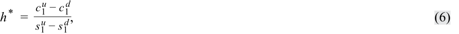
where all quantities on the right-hand side are known at t = 0. Equation 6 gives us the hedge ratio of the option, or the proportion of the underlying that will offset the risk associated with an option. In our sold call option example,
trong đó tất cả các đại lượng ở vế phải đều đã được biết tại thời điểm $t = 0$. Phương trình 6 cung cấp cho chúng ta tỷ số phòng ngừa rủi ro (hedge ratio) của quyền chọn, hay tỷ lệ (proportion) của tài sản cơ sở sẽ bù đắp rủi ro gắn liền với một quyền chọn. Trong ví dụ bán quyền chọn mua của chúng ta:
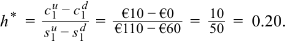
For each call option unit sold, we buy 0.2 units of the underlying asset (or for each underlying asset unit, we must sell 5 call options to equate the portfolio values at t = 1). Consider the two scenarios as follows:
Đối với mỗi đơn vị quyền chọn mua được bán ra, chúng ta mua 0,2 đơn vị tài sản cơ sở (hoặc đối với mỗi đơn vị tài sản cơ sở, chúng ta phải bán 5 quyền chọn mua để làm cân bằng giá trị danh mục đầu tư tại thời điểm $t = 1$). Hãy xem xét hai kịch bản như sau:
■ Up move from S 0 to S 1u by Ru :
- Biến động đi lên từ $S_0$ tới $S_1^u$ theo hệ số $R^u$:
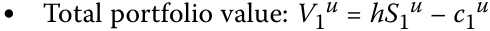
= €110 × 0.20 − €10 = €22 – 10 = €12.
-
Biến động đi xuống từ $S_0$ tới $S_1^d$ theo hệ số $R^d$:
-
Tổng giá trị danh mục đầu tư: $V_1^d = h S_1^d - c_1^d = \text{€60} \times 0,20 = \text{€12}$.
■ Down move from S 0 to S 1d by Rd :
- Total portfolio value V 1d = hS 1d – c1d = €60 × 0.20 = €12.
Giá trị danh mục đầu tư là như nhau, $V_1^u = V_1^d$, điều này có hai hàm ý:
The portfolio values are the same, V 1u = V 1d , which has two implications:
1. Chúng ta có thể sử dụng một trong hai kịch bản danh mục để xác định giá trị công cụ phái sinh, và
1. We can use either portfolio to value the derivative, and
2. The return V 1u / V 0 = V 1d / V0 must equal one plus the risk-free rate.
2. Tỷ suất sinh lợi $V_1^u / V_0 = V_1^d / V_0$ phải bằng một cộng với lãi suất phi rủi ro ($1 + r$).
Exhibit 3 summarizes these results.
Bảng 3 (Exhibit 3) tóm tắt các kết quả này.
Exhibit 3: Value of the Hedged Portfolio
Bảng 3: Giá trị của Danh mục Đầu tư Đã Phòng ngừa Rủi ro (Exhibit 3: Value of the Hedged Portfolio)
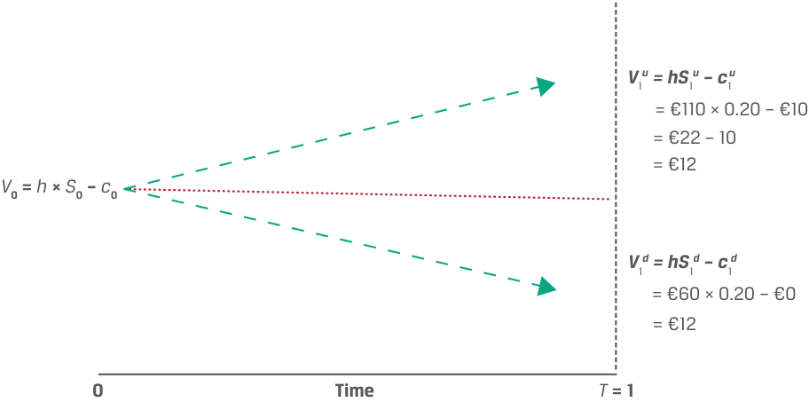
Chú thích hình ảnh: - Tại $t = 0$: $V_0 = h \times S_0 - c_0$. - Tại $T = 1$: Dù giá tăng ($V_1^u = \text{€110} \times 0,20 - \text{€10} = \text{€12}$) hay giảm ($V_1^d = \text{€60} \times 0,20 - \text{€0} = \text{€12}$), danh mục đều có giá trị chắc chắn bằng $\text{€12}$.
This hedging approach is not specific to call options and can be used for any derivative contract whose value is entirely determined by the underlying asset’s value at t = 1.
Phương pháp tiếp cận phòng ngừa rủi ro này không chỉ dành riêng cho quyền chọn mua mà có thể được sử dụng cho bất kỳ hợp đồng phái sinh nào có giá trị hoàn toàn được xác định bởi giá trị của tài sản cơ sở tại thời điểm $t = 1$.
To prevent arbitrage, the portfolio value at t = 1,
Để ngăn chặn kinh doanh chênh lệch giá, giá trị danh mục đầu tư tại thời điểm $t = 1$,
- V 1 = h × Ru S 0 − c 1u = h × Rd S 0 − c 1d ,
- $V_1 = h \times R^u S_0 - c_1^u = h \times R^d S_0 - c_1^d$,
should be discounted at the risk-free rate so that:
cần phải được chiết khấu theo lãi suất phi rủi ro sao cho:
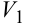
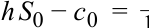
1 + _r.
Based on no-arbitrage pricing and the certain portfolio payoff, V 1, the value of the call option may be shown as:
Dựa trên nguyên tắc định giá không kinh doanh chênh lệch giá và kết quả thanh toán danh mục chắc chắn, $V_1$, giá trị của quyền chọn mua có thể được biểu diễn là:
c 0 = h × S 0 − V 1( 1 + r)−1 . ~~(7)~~
Substituting the information from the previous example, we already established that V 1 = €12. For an annual risk-free rate of 5%:
Thay thế thông tin từ ví dụ trước, chúng ta đã xác lập được rằng $V_1 = \text{€12}$. Với mức lãi suất phi rủi ro hàng năm là 5%:
c 0 = h × S 0 − V 1(1 + r)−1
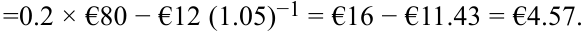
The call option price c 0 is therefore €4.57. We may confirm an investor in the hedge portfolio would earn the risk-free rate ( r ) of 5% by comparing the initial portfolio value V 0 with the portfolio value after one period of V 1 (recalling that V 1u = V 1d ) equal to €12:
V 0 = h × S 0 – c 0
V 0 = €11.43 = €16 - €4.57 V 1 = V 0(1 + r ) ~~(8)~~
V 1 = €12 = €11.43 (1 + 0.5)
Do đó, mức giá quyền chọn mua $c_0$ là €4,57. Chúng ta có thể xác nhận rằng một nhà đầu tư nắm giữ danh mục phòng ngừa rủi ro sẽ kiếm được mức lãi suất phi rủi ro ($r$) là 5% bằng cách so sánh giá trị danh mục đầu tư ban đầu $V_0$ với giá trị danh mục đầu tư sau một kỳ là $V_1$ (nhớ rằng $V_1^u = V_1^d$) bằng €12:
EXAMPLE 1
VÍ DỤ 1 (EXAMPLE 1)
Hightest Capital
Hightest Capital
Hightest Capital believes that a particular non-dividend-paying stock is currently trading at $50 and is considering the sale of a one-year European call option at an exercise price of $55. Answer the following questions:
Hightest Capital tin rằng một cổ phiếu không trả cổ tức cụ thể hiện đang giao dịch ở mức giá $50 và đang cân nhắc việc bán một quyền chọn mua kiểu châu Âu kỳ hạn 1 năm tại mức giá thực hiện là $55. Hãy trả lời các câu hỏi sau đây:
1. If the stock price is expected to either go up or down by 20% over the next year, what price should Hightest expect to receive for the sold call option? Assume a risk-free rate of 5%.
1. Nếu giá cổ phiếu được dự báo sẽ hoặc tăng lên hoặc giảm xuống 20% trong năm tới, mức giá mà Hightest nên kỳ vọng nhận được cho quyền chọn mua đã bán là bao nhiêu? Giả sử lãi suất phi rủi ro là 5%.
2. How would the call option price change if the stock price were expected to either go up or down by 40% over the next year?
2. Mức giá quyền chọn mua sẽ thay đổi như thế nào nếu giá cổ phiếu được dự báo sẽ hoặc tăng lên hoặc giảm xuống 40% trong năm tới?
3. If Hightest had a more optimistic outlook on the future stock price (i.e., they estimated a higher probability of the option ending up in-the-money), how would the expected call option price change?
3. Nếu Hightest có triển vọng lạc quan hơn về giá cổ phiếu trong tương lai (tức là họ ước tính xác suất quyền chọn kết thúc ở trạng thái có lời cao hơn), thì mức giá quyền chọn mua dự kiến sẽ thay đổi như thế nào?
4. What would be the price of a one-year put option at an exercise price of $55 if the stock price were expected to change by 20%? 40%?
4. Mức giá của một quyền chọn bán kỳ hạn 1 năm tại mức giá thực hiện $55 sẽ là bao nhiêu nếu giá cổ phiếu được dự báo sẽ thay đổi 20%? 40%?
Solution to 1:
Lời giải câu 1:
Denote the initial price of the underlying stock as S 0 = $50 and the exercise price of the call option as _X =_ $55. If the stock price moves up or down by 20%, then:
Ký hiệu mức giá ban đầu của cổ phiếu cơ sở là $S_0 = \$50$ và giá thực hiện của quyền chọn mua là $X = \$55$. Nếu giá cổ phiếu đi lên hoặc đi xuống 20%, khi đó:
S 1u = Ru S 0 = 1.2 × $50 = $60.
The price will either move up to $60 or down to $40. Given that the payoff of a call option at expiry is Max(0, ST − X ):
Mức giá sẽ hoặc đi lên $60 hoặc đi xuống $40. Với kết quả thanh toán của một quyền chọn mua khi đáo hạn là $\text{Max}(0, S_T - X)$:
- c 1u = Max (0, S 1u − X ) = Max (0, $60 − $55) = $5.
- $c_1^u = \text{Max}(0, S_1^u - X) = \text{Max}(0, \$60 - \$55) = \$5$.
The call option value is $5 if the underlying stock increases in price by 20% and zero if it decreases by 20%. The hedge ratio of the option is:
Giá trị quyền chọn mua là $5 nếu cổ phiếu cơ sở tăng giá 20% và bằng không nếu nó giảm giá 20%. Tỷ số phòng ngừa rủi ro (hedge ratio) của quyền chọn là:
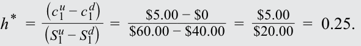
To create a risk-free portfolio, we can sell a call option and purchase 0.25 units of the underlying asset today. At maturity, the hedged portfolio value is:
Để tạo ra một danh mục đầu tư phi rủi ro, chúng ta có thể bán một quyền chọn mua và mua 0,25 đơn vị tài sản cơ sở ngày hôm nay. Khi đáo hạn, giá trị danh mục đầu tư đã phòng ngừa rủi ro là:
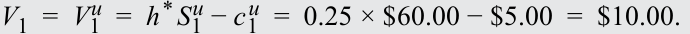
We can use either V 1u or V 1d to compute the certain value, V 1, and the present value of the hedged position today is:
Chúng ta có thể sử dụng $V_1^u$ hoặc $V_1^d$ để tính toán giá trị chắc chắn, $V_1$, và giá trị hiện tại của vị thế đã phòng ngừa rủi ro ngày hôm nay là:
V 0 = V 1(1 + r )−1 = $10.00 × 1.05<sup>−1</sup> = $9.52.
The call option value is:
Giá trị quyền chọn mua là:
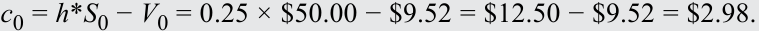
The no-arbitrage price of the call option should be $2.98. If not, then investors would be able to construct a synthetic risk-free asset using the option and its underlying asset with a higher return than the risk-free rate.
Mức giá không kinh doanh chênh lệch giá của quyền chọn mua phải là $2,98. Nếu không, các nhà đầu tư sẽ có thể xây dựng một tài sản phi rủi ro tổng hợp bằng cách sử dụng quyền chọn và tài sản cơ sở của nó với tỷ suất sinh lợi cao hơn mức lãi suất phi rủi ro.
Note that the hedge ratio (0.25 units in this example) is positive in this case since the derivative is sold and the underlying is purchased. A negative hedge ratio implies that both the derivative and the underlying are purchased or sold to create the hedge. Also, while the hedge ratio is usually expressed as a fraction of an underlying unit, option contracts are usually traded in larger size, allowing a round number of underlying assets to be purchased or sold as a hedge. It is important that the ratio (4:1 in this case) of options to underlying units is maintained in the portfolio.
Lưu ý rằng tỷ số phòng ngừa rủi ro (0,25 đơn vị trong ví dụ này) mang dấu dương trong trường hợp này bởi vì công cụ phái sinh được bán và tài sản cơ sở được mua. Một tỷ số phòng ngừa rủi ro mang dấu âm hàm ý rằng cả công cụ phái sinh và tài sản cơ sở đều được mua hoặc cùng được bán để tạo ra vị thế phòng ngừa rủi ro. Ngoài ra, mặc dù tỷ số phòng ngừa rủi ro thường được biểu thị dưới dạng một phân số của một đơn vị tài sản cơ sở, các hợp đồng quyền chọn thường được giao dịch với quy mô lớn hơn, cho phép mua hoặc bán một số nguyên tròn các tài sản cơ sở để làm công cụ phòng ngừa rủi ro. Điều quan trọng là tỷ lệ (ratio, 4:1 trong trường hợp này) giữa số lượng quyền chọn và số lượng đơn vị tài sản cơ sở được duy trì trong danh mục đầu tư.
Solution to 2:
Lời giải câu 2:
If the stock price changes by 40%, then the call option payoff at expiry is:
Nếu giá cổ phiếu thay đổi 40%, khi đó kết quả thanh toán của quyền chọn mua lúc đáo hạn là:
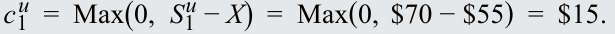
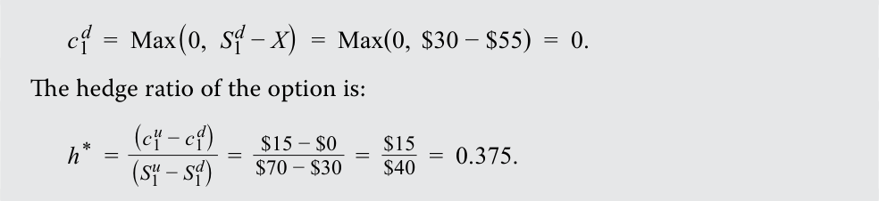
At maturity, the perfectly hedged portfolio is worth:
Tỷ số phòng ngừa rủi ro của quyền chọn là:
V 1 = V 1u = h* S 1u − c 1u = 0.375 × $70 − $15 = $11.25. _V_ 1 = _V_ 1<sup>_d_</sup> = _h_<sup>*</sup> _S_ 1<sup>_d_</sup> − _c_ 1<sup>_d_</sup> = 0.375 × $30 − $0 = $11.25. The present value of the hedged position at t = 0 is:
Khi đáo hạn, danh mục đầu tư được phòng ngừa rủi ro hoàn hảo có giá trị là:
V 0 = V 1(1 + r)−1 = $11.25 × 1.05<sup>−1</sup> = $10.71. Then, the call option price at t = 0 is:
Giá trị hiện tại của vị thế đã phòng ngừa rủi ro tại thời điểm $t = 0$ là:
c 0 = h * S 0 − V 0 = 0.375 × $50 − $10.71 = $18.75 − $10.71 = $8.04.
Khi đó, giá quyền chọn mua tại thời điểm $t = 0$ là:
A higher expected price change indicates higher volatility. An increase in the range of future price changes increases the value of the call option.
Mức thay đổi giá dự kiến cao hơn cho thấy độ biến động (volatility) cao hơn. Sự gia tăng phạm vi của những thay đổi giá trong tương lai làm tăng giá trị của quyền chọn mua.
Solution to 3:
Lời giải câu 3:
Since the actual probabilities of an up or a down move in the underlying asset do not affect the no-arbitrage value of the option, the option price that Hightest may charge should not change. Hightest can offset the risk of selling the call by purchasing h* units of the underlying asset, so any directional views on the stock price do not affect the hedge position.
Vì các xác suất thực tế của biến động đi lên hoặc đi xuống ở tài sản cơ sở không ảnh hưởng đến giá trị không kinh doanh chênh lệch giá của quyền chọn, nên mức giá quyền chọn mà Hightest có thể tính sẽ không thay đổi. Hightest có thể bù đắp rủi ro của việc bán quyền chọn mua bằng cách mua $h^*$ đơn vị tài sản cơ sở, vì vậy bất kỳ quan điểm định hướng nào về giá cổ phiếu đều không ảnh hưởng đến vị thế phòng ngừa rủi ro.
Solution to 4:
Lời giải câu 4:
Using put–call parity, c 0 − p 0 = S 0 − X (1 + r )−T , and rearranging terms to solve for the put price, when the stock price changes by 20% and the call option price is $2.98, the result can be calculated as:
Sử dụng ngang giá quyền chọn bán–quyền chọn mua, $c_0 - p_0 = S_0 - X(1 + r)^{-T}$, và sắp xếp lại các số hạng để giải tìm giá quyền chọn bán, khi giá cổ phiếu thay đổi 20% và giá quyền chọn mua là $2,98, kết quả có thể được tính như sau:
p 0 = c 0 − S 0 + X (1 + r )−T = $2.98 − $50 + $55(1 + 0.05)<sup>−1</sup> = $5.36.
When the underlying stock price changes by 40% and the call option price is $8.04, the put option price is:
Khi giá cổ phiếu cơ sở thay đổi 40% và giá quyền chọn mua là $8,04, giá quyền chọn bán là:
p 0 = c 0 − S 0 + X (1 + r )−T = $8.04 − $50 + $55(1 + 0.05)<sup>−1</sup> = $10.42.
QUESTION SET
BỘ CÂU HỎI (QUESTION SET)
Binomial Valuation of Options
Định giá Quyền chọn theo Mô hình Nhị thức (Binomial Valuation of Options)
- Determine the correct answers to fill in the blanks: To price a contingent claim, such as an option, a model for the _ of the underlying asset is needed due to the __ nature of the contract’s payoff.
- Xác định các câu trả lời đúng để điền vào chỗ trống: Để định giá một quyền đòi nợ có điều kiện, chẳng hạn như quyền chọn, cần phải có một mô hình cho _ của tài sản cơ sở do bản chất __ trong kết quả thanh toán của hợp đồng.
Solution:
Lời giải:
To price a contingent claim, such as an option, a model for the future price behavior of the underlying asset is needed due to the asymmetric nature of the contract’s payoff.
Để định giá một quyền đòi nợ có điều kiện, chẳng hạn như quyền chọn, cần phải có một mô hình cho hành vi giá trong tương lai (future price behavior) của tài sản cơ sở do bản chất bất đối xứng (asymmetric) trong kết quả thanh toán của hợp đồng.
- Describe the main difference between pricing a contingent claim and pricing a forward commitment.
- Mô tả sự khác biệt chính giữa việc định giá một quyền đòi nợ có điều kiện (contingent claim) và việc định giá một cam kết kỳ hạn (forward commitment).
Solution:
Lời giải:
The symmetric nature of a forward commitment’s payoff (i.e., the obligation to transact at maturity) allows the commitment to be perfectly replicated without the need to model the future price behavior of the underlying asset. However, the asymmetric nature of a contingent claim’s payoff (i.e., the right but not the obligation to transact at maturity) does require the future price behavior to be modeled.
Bản chất đối xứng trong kết quả thanh toán của một cam kết kỳ hạn (tức là nghĩa vụ phải giao dịch khi đáo hạn) cho phép cam kết đó được mô phỏng một cách hoàn hảo mà không cần phải mô hình hóa hành vi giá tương lai của tài sản cơ sở. Tuy nhiên, bản chất bất đối xứng trong kết quả thanh toán của một quyền đòi nợ có điều kiện (tức là quyền nhưng không phải nghĩa vụ giao dịch khi đáo hạn) thực sự đòi hỏi phải mô hình hóa hành vi giá trong tương lai.
- If a one-period binomial model is used to price an at-the-money put option, which of the following statements is most accurate? The option will be:
-
A. in-the-money if the price moves up.
-
B. out-of-the-money if the price moves up.
-
C. at-the-money if the price moves up or down.
- Nếu một mô hình nhị thức một kỳ được sử dụng để định giá một quyền chọn bán ngang giá (at-the-money put option), phát biểu nào sau đây là chính xác nhất? Quyền chọn sẽ ở trạng thái:
-
A. có lời (in-the-money) nếu giá đi lên.
-
B. lỗ (out-of-the-money) nếu giá đi lên.
-
C. ngang giá (at-the-money) nếu giá đi lên hoặc đi xuống.
Solution:
Lời giải:
The correct answer is B; the option will be out-of-the-money if the price moves up. An at-the-money put option has an exercise price equal to the underlying asset price. Therefore, a price decrease will result in the put op-
Đáp án đúng là B; quyền chọn sẽ ở trạng thái lỗ (out-of-the-money) nếu giá đi lên. Một quyền chọn bán ngang giá có giá thực hiện bằng với giá tài sản cơ sở. Do đó, sự sụt giảm giá sẽ dẫn đến việc quyền chọn bán
tion moving in the money , and a price increase will result in the put option moving out of the money . 4. Explain how increasing the up gross return, Ru , and/or decreasing the down gross return, Rd , in a one-period binomial model would influence the price of a call and a put option. Solution: In a one-period binomial model, the volatility of the underlying asset is represented by the spread between the up gross return, Ru , and the down gross return, Rd . Therefore, if either the up gross return increases or the down gross return decreases (or both), the price of the underlying asset at maturity will be more volatile. If all else remains equal, then the price of both call and put options will increase when the underlying asset is expected to have a higher volatility over the life of the option. 5. A put option on a non-dividend-paying stock has an exercise price, X , of £21 and six months left to maturity. The current stock price, S 0, is £20, and an investor believes that the stock’s price in six months’ time will be either 10% higher or 10% lower. a. Describe how the investor can construct a perfectly hedged portfolio using the put option and its underlying stock. b. What will the value of the hedged portfolio be in the scenario that the stock price rises and the scenario that the stock price falls (assume a risk-free rate is 4%)? c. What is the no-arbitrage price of the put option? Solution: a. Denote the initial price of the underlying stock as S 0 = £20.00 and the exercise price of the put option as X = £21.00. If the stock price moves up by 10%, then: S 1u = Ru S 0 = 1.1 × £20.00 = £22.00. If the stock price moves down by 10%, then S 1d = Rd S 0 = 0.9 × £20.00 = £18.00. Given that the payoff of a put option at expiry is Max(0, X − ST ): p 1u = Max (0, X − S 1u ) = Max (0, £21.00 − £22.00) = £0. p 1d = Max (0, X − S 1d ) = Max (0, £21.00 − £18.00) = £3.00.
chuyển sang trạng thái có lời (in the money), và sự gia tăng giá sẽ dẫn đến việc quyền chọn bán chuyển sang trạng thái lỗ (out of the money).
- Giải thích việc tăng tỷ suất sinh lợi gộp khi giá lên, $R^u$, và/hoặc giảm tỷ suất sinh lợi gộp khi giá xuống, $R^d$, trong một mô hình nhị thức một kỳ sẽ ảnh hưởng như thế nào đến mức giá của quyền chọn mua và quyền chọn bán.
Lời giải:
Trong mô hình nhị thức một kỳ, độ biến động của tài sản cơ sở được đại diện bởi khoảng chênh lệch (spread) giữa tỷ suất sinh lợi gộp khi giá lên, $R^u$, và tỷ suất sinh lợi gộp khi giá xuống, $R^d$. Do đó, nếu tỷ suất sinh lợi gộp khi giá lên tăng hoặc tỷ suất sinh lợi gộp khi giá xuống giảm (hoặc cả hai), mức giá của tài sản cơ sở khi đáo hạn sẽ biến động mạnh hơn. Nếu tất cả các yếu tố khác giữ nguyên không đổi, thì giá của cả quyền chọn mua và quyền chọn bán sẽ cùng tăng lên khi tài sản cơ sở được dự báo có độ biến động cao hơn trong suốt vòng đời của quyền chọn.
- Một quyền chọn bán trên một cổ phiếu không trả cổ tức có giá thực hiện, $X$, là £21 và còn 6 tháng nữa là đáo hạn. Giá cổ phiếu hiện tại, $S_0$, là £20, và một nhà đầu tư tin rằng giá cổ phiếu sau thời gian 6 tháng sẽ hoặc cao hơn 10% hoặc thấp hơn 10%.
a. Mô tả cách thức nhà đầu tư có thể xây dựng một danh mục đầu tư được phòng ngừa rủi ro hoàn hảo bằng cách sử dụng quyền chọn bán và cổ phiếu cơ sở của nó.
The put option will be worth £ 3.00 if the underlying stock decreases in price by 10% and worthless if it increases by 10%. The hedge ratio of the option is:
b. Giá trị của danh mục đầu tư đã phòng ngừa rủi ro sẽ là bao nhiêu trong kịch bản giá cổ phiếu tăng lên và kịch bản giá cổ phiếu giảm xuống (giả sử lãi suất phi rủi ro là 4%)?
c. Mức giá không kinh doanh chênh lệch giá của quyền chọn bán là bao nhiêu?
Lời giải:
a. Ký hiệu mức giá ban đầu của cổ phiếu cơ sở là $S_0 = \text{£20,00}$ và giá thực hiện của quyền chọn bán là $X = \text{£21,00}$. Nếu giá cổ phiếu tăng lên 10%, khi đó:
Nếu giá cổ phiếu giảm xuống 10%, khi đó:
Với kết quả thanh toán của một quyền chọn bán khi đáo hạn là $\text{Max}(0, X - S_T)$:
Quyền chọn bán sẽ có giá trị là £3,00 nếu cổ phiếu cơ sở giảm giá 10% và không có giá trị nếu nó tăng giá 10%. Tỷ số phòng ngừa rủi ro của quyền chọn là:
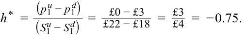
So, to create a risk-free portfolio, we can buy the put option and buy 0.75 units of the underlying asset.
Vì vậy, để tạo ra một danh mục đầu tư phi rủi ro, chúng ta có thể mua quyền chọn bán và mua 0,75 đơn vị tài sản cơ sở.
b. At maturity, the value of the perfectly hedged portfolio is:
b. Khi đáo hạn, giá trị của danh mục đầu tư được phòng ngừa rủi ro hoàn hảo là:
V 1 = V 1u = h* S 1u + p 1u = 0.75 × £22 + £0 = £16.50.
- V 1 = V 1d = h* S 1d + p 1d = 0.75 × £18 + £3.00 = £16.50.
- $V_1 = V_1^d = |h^*| S_1^d + p_1^d = 0,75 \times \text{£18} + \text{£3,00} = \text{£16,50}$.
We can use either V 1u or V 1d to compute the certain value, V 1, and the present value of the hedged position today is:
Chúng ta có thể sử dụng $V_1^u$ hoặc $V_1^d$ để tính toán giá trị chắc chắn, $V_1$, và giá trị hiện tại của vị thế đã phòng ngừa rủi ro ngày hôm nay là:
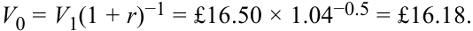
- c. The price of the put option is:
- c. Mức giá của quyền chọn bán là:
p 0 = V 0 − h * S 0− = £16.18 − 0.75 × £20 = £16.18 − £15 = £1.18. The no-arbitrage price of the put option should be £1.18.
Mức giá không kinh doanh chênh lệch giá của quyền chọn bán phải là £1,18.
- Determine the correct answers to fill in the blanks: When the ___ applies, the rate of return on all (real or synthetic) riskfree assets should equal the ____.
- Xác định các câu trả lời đúng để điền vào chỗ trống: Khi ___ được áp dụng, tỷ suất sinh lợi trên tất cả các tài sản phi rủi ro (thực hoặc tổng hợp) phải bằng với ____.
Solution:
Lời giải:
When the law of one price applies, the rate of return on all (real or synthetic) risk-free assets should equal the risk-free rate .
Khi quy luật một giá (law of one price) được áp dụng, tỷ suất sinh lợi trên tất cả các tài sản phi rủi ro (thực hoặc tổng hợp) phải bằng với lãi suất phi rủi ro (risk-free rate).
5 RISK NEUTRALITY
5 TÍNH TRUNG LẬP VỚI RỦI RO (RISK NEUTRALITY)
describe the concept of risk neutrality in derivatives pricing
mô tả khái niệm trung lập với rủi ro (risk neutrality) trong việc định giá công cụ phái sinh
As shown in the prior lesson, an option’s value is not affected by actual (real-world) probabilities of underlying price increases or decreases. This realization contributed to the growing use of options as it became easier to agree on a given option’s value. As we will see in this lesson, only the expected volatility—that is, gross returns Ru and Rd introduced earlier—and not the expected return are required to price an option.
Như đã chỉ ra trong bài học trước, giá trị của một quyền chọn không bị ảnh hưởng bởi các xác suất thực tế (trong thế giới thực) của việc giá tài sản cơ sở tăng lên hay giảm xuống. Nhận thức này đã góp phần vào việc sử dụng ngày càng rộng rãi các quyền chọn vì các bên trở nên dễ dàng thống nhất về giá trị của một quyền chọn nhất định hơn. Như chúng ta sẽ thấy trong bài học này, chỉ có độ biến động dự kiến—tức là các tỷ suất sinh lợi gộp $R^u$ và $R^d$ đã giới thiệu trước đó—chứ không phải tỷ suất sinh lợi kỳ vọng là cần thiết để định giá một quyền chọn.
We may generalize the relationship between an option’s value and that of the hedge portfolios from Equation 5 of the prior lesson using the example of a call option c 0 as follows:
Chúng ta có thể khái quát hóa mối quan hệ giữa giá trị của một quyền chọn và giá trị của các danh mục phòng ngừa rủi ro từ bài học trước bằng cách sử dụng ví dụ về một quyền chọn mua $c_0$ như sau:
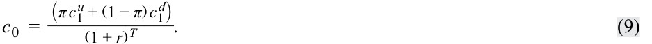
The value of the call option today, c 0, is computed as the expected value of the option at expiration, c 1u and c 1d , discounted at the risk-free rate, r . This shows the derivative’s value as similar to any other asset in that it equals the present value of expected future cash flows. In this case, these cash flows are weighted by assumed probabilities that are consistent with risk-neutral returns on the underlying.
Giá trị của quyền chọn mua ngày hôm nay, $c_0$, được tính bằng giá trị kỳ vọng của quyền chọn khi đáo hạn, $c_1^u$ và $c_1^d$, được chiết khấu theo lãi suất phi rủi ro, $r$. Điều này cho thấy giá trị của công cụ phái sinh tương tự như bất kỳ tài sản nào khác ở chỗ nó bằng giá trị hiện tại của các dòng tiền dự kiến trong tương lai. Trong trường hợp này, các dòng tiền đó được tính trọng số theo các xác suất giả định vốn nhất quán với tỷ suất sinh lợi trung lập với rủi ro trên tài sản cơ sở.
The risk-neutral probability (π) is the computed probability used in binomial option pricing by which the discounted weighted sum of expected values of the underlying, S 1u = Ru S 0 and S 1d = Rd S 0, equal the current option price. Specifically, this probability is computed using the risk-free rate and assumed up gross return and down gross return of the underlying as in Equation 7.
Xác suất trung lập với rủi ro (risk-neutral probability – $\pi$) là xác suất được tính toán sử dụng trong định giá quyền chọn nhị thức mà theo đó tổng có trọng số được chiết khấu của các giá trị kỳ vọng của quyền chọn trên tài sản cơ sở (với $S_1^u = R^u S_0$ và $S_1^d = R^d S_0$) bằng với mức giá quyền chọn hiện tại. Cụ thể, xác suất này được tính bằng cách sử dụng lãi suất phi rủi ro cùng tỷ suất sinh lợi gộp khi giá lên và tỷ suất sinh lợi gộp khi giá xuống giả định của tài sản cơ sở như trong Phương trình 10:
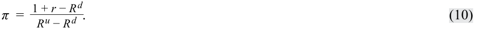
More specifically, π, is the risk-neutral probability of an increase in the underlying price to S 1u = Ru S 0, and (1 − π) is that of a decrease, S 1d = Rd S 0.
Cụ thể hơn, $\pi$ là xác suất trung lập với rủi ro của sự gia tăng trong giá tài sản cơ sở lên $S_1^u = R^u S_0$, và $(1 - \pi)$ là xác suất trung lập với rủi ro của sự sụt giảm xuống $S_1^d = R^d S_0$.
Substituting the details from our earlier example, where Ru S 0 = €110, Rd S 0 = €60, S 0 = €80, and X = €100, Ru = 1.375 and Rd = 0.75 and assuming an annual risk-free rate of 5%:
Thay thế các thông số chi tiết từ ví dụ trước đó của chúng ta, nơi $R^u S_0 = \text{€110}$, $R^d S_0 = \text{€60}$, $S_0 = \text{€80}$, và $X = \text{€100}$, $R^u = 1,375$ và $R^d = 0,75$, đồng thời giả định lãi suất phi rủi ro hàng năm là 5%:
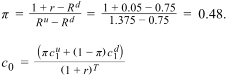
=[0.48 × Max(0, €110 − €100) + 0.52 × Max(0, €60 − €100)]/1.05
= €4.80/1.05 = €4.57, which matches our earlier result from the prior lesson.
Trong công thức trên, các xác suất trung lập với rủi ro chỉ được xác định bởi các tỷ suất sinh lợi gộp khi giá lên và xuống, $R^u$ và $R^d$, đại diện cho độ biến động của tài sản cơ sở và lãi suất phi rủi ro được sử dụng để tính giá trị hiện tại của các dòng tiền tương lai. Giá trị phái sinh không kinh doanh chênh lệch giá này được thiết lập tách biệt khỏi quan điểm của nhà đầu tư về rủi ro và được gọi là định giá trung lập với rủi ro (risk-neutral pricing).
In Equation 7, the risk-neutral probabilities are determined solely by the up and down gross returns, Ru and Rd , representing underlying asset volatility and the risk-free rate used to calculate the present value of future cash flows. This no-arbitrage derivative value established separately from investor views on risk is referred to as risk-neutral pricing .
The use of risk-neutral pricing goes well beyond the simple one-period binomial tree and may be applied to any model that uses future underlying asset price movements, as we will see later in the curriculum.
Việc sử dụng định giá trung lập với rủi ro còn vượt xa cây nhị thức một kỳ đơn giản và có thể được áp dụng cho bất kỳ mô hình nào sử dụng các biến động giá tài sản cơ sở trong tương lai, như chúng ta sẽ thấy ở phần sau của chương trình học.
EXAMPLE 2
VÍ DỤ 2 (EXAMPLE 2)
Hightest Capital (revisited)
Hightest Capital (xem xét lại)
Revisiting Example 1 and the European call option sold by Hightest Capital, we can now explore the option price using risk-neutral pricing. Answer the following questions:
Xem xét lại Ví dụ 1 và quyền chọn mua kiểu châu Âu được bán bởi Hightest Capital, bây giờ chúng ta có thể khám phá mức giá quyền chọn bằng cách sử dụng phương pháp định giá trung lập với rủi ro. Hãy trả lời các câu hỏi sau đây:
1. What is the risk-neutral probability of an up move and a down move in the one-period binomial model described in Example 1?
1. Xác suất trung lập với rủi ro của một biến động đi lên và một biến động đi xuống trong mô hình nhị thức một kỳ được mô tả ở Ví dụ 1 là bao nhiêu?
2. Demonstrate how this risk-neutral probability can be used to arrive at the no-arbitrage price of the call option.
2. Chứng minh cách thức xác suất trung lập với rủi ro này có thể được sử dụng để tính ra mức giá không kinh doanh chênh lệch giá của quyền chọn mua.
3. What would be the value of a European put option on the same stock with the same exercise price and expiration date?
3. Giá trị của một quyền chọn bán (put option) kiểu châu Âu trên cùng cổ phiếu đó với cùng giá thực hiện và ngày đáo hạn sẽ là bao nhiêu?
4. Confirm that the call option price computed in question 2 and the put option price computed in question 3 both satisfy the put–call parity relationship.
4. Xác nhận rằng giá quyền chọn mua được tính trong câu hỏi 2 và giá quyền chọn bán được tính trong câu hỏi 3 đều thỏa mãn mối quan hệ ngang giá quyền chọn bán–quyền chọn mua.
Solution to 1:
Lời giải câu 1:
The risk-neutral probability of an up move, denoted π, is:
Xác suất trung lập với rủi ro của một biến động đi lên, ký hiệu là $\pi$, bằng:
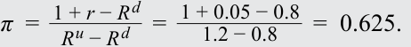
The risk-neutral probability of a down move is therefore:
Do đó, xác suất trung lập với rủi ro của một biến động đi xuống là:
1 – π = 1 – 0.625 = 0.375.
Solution to 2:
Lời giải câu 2:
The call option price today is given by the (risk-neutral) expected value of the option payoff at maturity, discounted at the risk-free rate, r . In Equation 6:
Giá quyền chọn mua ngày hôm nay được cho bởi giá trị kỳ vọng (trung lập với rủi ro) của kết quả thanh toán quyền chọn khi đáo hạn, được chiết khấu theo lãi suất phi rủi ro, $r$:
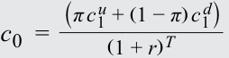
which matches the value in Example 1.
khớp với giá trị trong Ví dụ 1.
Solution to 3:
Lời giải câu 3:
Since Equation 6 is valid for any European option, the put option value with an exercise price of $55 is:
Vì công thức định giá trung lập với rủi ro có hiệu lực cho bất kỳ quyền chọn kiểu châu Âu nào, nên giá trị quyền chọn bán với giá thực hiện $55 là:
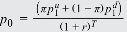
=[0.625 × Max(0, $55 − $60) + 0.375 × Max (0, $55 − $40)]/1.05
Lưu ý rằng chúng ta đã sử dụng cùng xác suất trung lập với rủi ro $\pi$ như trong Câu hỏi 1 và 2, bởi vì các giá trị này là một hàm số của mô hình nhị thức cho tài sản cơ sở ứng với một độ biến động tài sản và lãi suất phi rủi ro nhất định, chứ không phụ thuộc vào quyền chọn cụ thể đang được định giá.
= $5.625/1.05 = $5.36.
Lời giải câu 4:
Note that we have used the same risk-neutral probability π as in Questions 1 and 2, since these values are a function of the binomial model for the underlying asset for a given asset volatility and risk-free rate, not the specific option being priced.
Các quyền chọn mua và quyền chọn bán kiểu châu Âu có cùng giá thực hiện và ngày đáo hạn phải thỏa mãn ngang giá quyền chọn bán–quyền chọn mua được xác định bởi:
Solution to 4:
European call and put options with the same exercise price and maturity date must satisfy put–call parity as defined by:
qua đó xác nhận mối quan hệ này.
S 0 + p 0 = c 0 + X (1 + r )−T = $50 + $5.36 = $2.98 + $55 × 1.05−1 = $55.36, which confirms the relationship.
BỘ CÂU HỎI (QUESTION SET)
QUESTION SET
Phòng ngừa Rủi ro và Tính Trung lập với Rủi ro (Hedging and Risk Neutrality)
Hedging and Risk Neutrality
- Nhân tố nào sau đây ảnh hưởng đến giá trị của một mức giá quyền chọn khi sử dụng mô hình nhị thức?
-
A. Tỷ suất sinh lợi phi rủi ro (The risk-free rate of return)
-
B. Mức độ ngại rủi ro của các nhà đầu tư (The level of investors’ risk aversion)
-
C. Xác suất thực tế của một biến động tăng giá (The probability of an upward price move)
- Which of the following factors influences the value of an option price when using a binomial model?
-
A. The risk-free rate of return
-
B. The level of investors’ risk aversion
-
C. The probability of an upward price move
-
Solution:
Lời giải:
The correct answer is A, the risk-free rate of return. The value of an option is determined by its risk-neutral expectation discounted at the risk-free rate. In a one-period binomial model, the risk-neutral probabilities are determined only by the risk-free rate over the life of the option and the underlying asset’s volatility (as measured by the up and down gross returns, Ru and Rd ). Because of the ability to construct a perfect hedge of the option using the underlying asset, an option’s price is independent of investors’ risk aversion and the probability of the underlying price moving up (or down).
Đáp án đúng là A, tỷ suất sinh lợi phi rủi ro. Giá trị của một quyền chọn được xác định bởi kỳ vọng trung lập với rủi ro của nó được chiết khấu theo lãi suất phi rủi ro. Trong mô hình nhị thức một kỳ, các xác suất trung lập với rủi ro chỉ được xác định bởi lãi suất phi rủi ro trong suốt vòng đời của quyền chọn và độ biến động của tài sản cơ sở (được đo lường bởi các tỷ suất sinh lợi gộp khi giá lên và xuống, $R^u$ và $R^d$). Nhờ khả năng xây dựng một vị thế phòng ngừa rủi ro hoàn hảo cho quyền chọn bằng cách sử dụng tài sản cơ sở, giá của một quyền chọn độc lập với mức độ ngại rủi ro của các nhà đầu tư và xác suất thực tế của việc giá tài sản cơ sở đi lên (hoặc đi xuống).
- If the underlying asset price in a one-period binomial model can increase by 15% or decrease by 10% over the period and the prevailing risk-free rate
- Nếu giá tài sản cơ sở trong một mô hình nhị thức một kỳ có thể tăng 15% hoặc giảm 10% trong kỳ và lãi suất phi rủi ro hiện hành
over the period is 4%, what is the risk-neutral probability of an asset pricing decrease? Solution: If the underlying asset price in a one-period binomial model can increase by 15%, then the up gross return is Ru = 1.15. Similarly, if the price can decrease by 10%, then the down gross return is Rd = 0.9. The risk-neutral probability of an upward price move is: _ π_ =1 +r−Rd = 0.56. Ru − Rd= 1 + 0.04 − 0.9 1.15 − 0.9 The risk-neutral probability of a downward price move is 1 – 0.56 = 0.44. 3. Which of the following best describes the risk-neutral pricing interpretation of the one-period binomial option pricing formula? A. The real-world expected payoff discounted at the risk-free rate B. The risk-neutral expected payoff discounted at the risk-free rate C. The risk-neutral expected payoff discounted at a risk-adjusted rate Solution: The correct answer is B, the risk-neutral expected payoff discounted at the risk-free rate. The risk-neutral pricing interpretation of the option pricing formula states that the value of an option today is its risk-neutral expected value at maturity, discounted at the risk-free rate. 4. Determine the correct answers to fill in the blanks: If a call option is trading at a higher price than that implied from the binomial model, investors can earn a return in excess of the risk-free rate by _ at the risk-free rate, __________ the call, and _________ the underlying. Solution: If a call option is trading at a higher price than that implied from the binomial model, investors can earn a return in excess of the risk-free rate by _borrowing at the risk-free rate, selling the call, and buying the underlying. A synthetic risk-free asset can be created by this strategy that earns a return higher than the risk-free rate. Selling the over-priced call will provide a higher cash inflow than is required to generate the risk-free rate of return. 5. A stock’s price is currently ¥8,000. At the end of one month when its options expire, the stock price is either up by 5% or down by 15%. If the risk-free rate is –0.20% for the period, what is the value of a put option with a strike price of ¥7,950? A. ¥333.67 B. ¥299.60 C. ¥236.93 Solution: The correct answer is B, ¥299.60. Using risk-neutral pricing, we can determine the risk-neutral probability as: _ _____ π_ =1 +r−Rd = 0.74. Ru − Rd= 1 − 0.002 − 0.85 1.05 − 0.85 The risk-neutral probability of a down move is therefore 1 – π = 1 – 0.74 = 0.26. The value of a put option with an exercise price of ¥7,950 is:
trong kỳ là 4%, thì xác suất trung lập với rủi ro của một sự sụt giảm giá tài sản là bao nhiêu?
Lời giải:
Nếu giá tài sản cơ sở trong mô hình nhị thức một kỳ có thể tăng 15%, thì tỷ suất sinh lợi gộp khi giá lên là $R^u = 1,15$. Tương tự, nếu giá có thể giảm 10%, thì tỷ suất sinh lợi gộp khi giá xuống là $R^d = 0,9$. Xác suất trung lập với rủi ro của một biến động giá đi lên là:
Xác suất trung lập với rủi ro của một biến động giá đi xuống là $1 - 0,56 = 0,44$.
- Phương án nào sau đây mô tả đúng nhất cách diễn giải định giá trung lập với rủi ro của công thức định giá quyền chọn nhị thức một kỳ?
- A. Kết quả thanh toán kỳ vọng trong thế giới thực được chiết khấu theo lãi suất phi rủi ro
- B. Kết quả thanh toán kỳ vọng trung lập với rủi ro được chiết khấu theo lãi suất phi rủi ro
- C. Kết quả thanh toán kỳ vọng trung lập với rủi ro được chiết khấu theo lãi suất đã điều chỉnh rủi ro
Lời giải:
Đáp án đúng là B, kết quả thanh toán kỳ vọng trung lập với rủi ro được chiết khấu theo lãi suất phi rủi ro. Cách diễn giải định giá trung lập với rủi ro của công thức định giá quyền chọn phát biểu rằng giá trị của một quyền chọn ngày hôm nay là giá trị kỳ vọng trung lập với rủi ro của nó khi đáo hạn, được chiết khấu theo lãi suất phi rủi ro.
- Xác định các câu trả lời đúng để điền vào chỗ trống: Nếu một quyền chọn mua đang giao dịch ở mức giá cao hơn mức giá hàm ý từ mô hình nhị thức, các nhà đầu tư có thể kiếm được tỷ suất sinh lợi vượt quá lãi suất phi rủi ro bằng cách __ ở mức lãi suất phi rủi ro, _ quyền chọn mua, và ______ tài sản cơ sở.
Lời giải:
Nếu một quyền chọn mua đang giao dịch ở mức giá cao hơn mức giá hàm ý từ mô hình nhị thức, các nhà đầu tư có thể kiếm được tỷ suất sinh lợi vượt quá lãi suất phi rủi ro bằng cách đi vay (borrowing) ở mức lãi suất phi rủi ro, bán (selling) quyền chọn mua, và mua (buying) tài sản cơ sở. Một tài sản phi rủi ro tổng hợp có thể được tạo ra bằng chiến lược này nhằm mang lại tỷ suất sinh lợi cao hơn lãi suất phi rủi ro. Việc bán quyền chọn mua đang bị định giá cao sẽ mang lại dòng tiền thu vào cao hơn mức cần thiết để tạo ra tỷ suất sinh lợi phi rủi ro.
- Giá của một cổ phiếu hiện đang là ¥8.000. Vào cuối một tháng khi các quyền chọn của nó đáo hạn, giá cổ phiếu hoặc tăng lên 5% hoặc giảm xuống 15%. Nếu lãi suất phi rủi ro là –0,20% cho kỳ đó, giá trị của một quyền chọn bán với giá thực hiện ¥7.950 là bao nhiêu?
- A. ¥333,67
- B. ¥299,60
- C. ¥236,93
Lời giải:
Đáp án đúng là B, ¥299,60. Sử dụng phương pháp định giá trung lập với rủi ro, chúng ta có thể xác định xác suất trung lập với rủi ro là:
Do đó, xác suất trung lập với rủi ro của một biến động giảm là $1 - \pi = 1 - 0,74 = 0,26$. Giá trị của một quyền chọn bán có giá thực hiện ¥7.950 là:
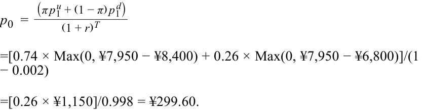
Volume 7: Derivatives
Learning Module 10 Valuing a Derivative Using a One-Period Binomial Model
Part 2/2: Practice Problems (PDF Pages 243–246)
Tập 7: Công cụ Phái sinh (Derivatives)
Học phần 10: Xác định Giá trị Công cụ Phái sinh Sử dụng Mô hình Nhị thức Một Kỳ (Valuing a Derivative Using a One-Period Binomial Model)
Phần 2/2: Bài tập Thực hành (Trang PDF 243–246)
~~PRACTICE PROBLEMS~~
BÀI TẬP THỰC HÀNH (PRACTICE PROBLEMS)
The following information relates to questions 1-4
Thông tin sau đây liên quan đến các câu hỏi từ 1 đến 4
Privatbank Kleinert KGaA, a private wealth manager in Munich, has a number of clients with large holdings in the German fintech firm SparCoin AG. Kleinert’s analyst is concerned about a drop in SparCoin’s share price in the next year and is recommending to clients that they consider purchasing a one-year put with an exercise price of €100. SparCoin’s spot price ( S 0) is €105.25, and it pays no dividends. The risk-free rate is 0.37%.
Privatbank Kleinert KGaA, một công ty quản lý gia sản tư nhân tại Munich, có một số khách hàng đang nắm giữ lượng lớn cổ phần trong công ty công nghệ tài chính (fintech) của Đức là SparCoin AG. Chuyên viên phân tích của Kleinert lo ngại về sự sụt giảm giá cổ phiếu của SparCoin trong năm tới và đang khuyến nghị khách hàng cân nhắc việc mua một quyền chọn bán kỳ hạn 1 năm với giá thực hiện là €100. Giá giao ngay của SparCoin ($S_0$) là €105,25, và cổ phiếu này không trả cổ tức. Lãi suất phi rủi ro là 0,37%.
1. Kleinert’s analyst estimates a 50-50 chance that the price of SparCoin will either increase by 12% or decline by 10% at the put option’s expiration date. Which of the following statements best describes the no-arbitrage option price implied by this assumption?
1. Chuyên viên phân tích của Kleinert ước tính có cơ hội 50-50 rằng giá cổ phiếu SparCoin sẽ hoặc tăng 12% hoặc giảm 10% vào ngày đáo hạn của quyền chọn bán. Phát biểu nào sau đây mô tả đúng nhất mức giá quyền chọn không kinh doanh chênh lệch giá được hàm ý bởi giả định này?
-
A. Since there is a 50% chance that the stock will fall to €94.73, there is a 50-50 chance of a €5.27 payout upon exercise and the no-arbitrage put is therefore worth €2.64 (= €5.27 / 2).
-
B. Since there is a 50% chance that the stock will fall to €94.73, there is a 50-50 chance of a €5.27 payout upon exercise and given the risk-neutral probability of 0.47, the no-arbitrage put price is €2.48 (= €5.27 × 0.47).
-
C. Since there is a 50% chance that the stock will fall to €94.73 and the risk-neutral probability is 0.47, the no-arbitrage put price is €2.78 (= €5.27 × {[1 – 0.47]/1.0037}).
-
A. Vì có 50% khả năng cổ phiếu sẽ giảm xuống €94,73, nên có cơ hội 50-50 nhận được khoản thanh toán €5,27 khi thực hiện quyền và do đó quyền chọn bán không kinh doanh chênh lệch giá có giá trị là €2,64 ($= \text{€5,27} / 2$).
-
B. Vì có 50% khả năng cổ phiếu sẽ giảm xuống €94,73, nên có cơ hội 50-50 nhận được khoản thanh toán €5,27 khi thực hiện quyền và với xác suất trung lập với rủi ro là 0,47, mức giá quyền chọn bán không kinh doanh chênh lệch giá là €2,48 ($= \text{€5,27} \times 0,47$).
-
C. Vì có 50% khả năng cổ phiếu sẽ giảm xuống €94,73 và xác suất trung lập với rủi ro là 0,47, mức giá quyền chọn bán không kinh doanh chênh lệch giá là €2,78 ($= \text{€5,27} \times \{[1 - 0,47] / 1,0037\}$).
2. If Kleinert’s clients observe that the one-year put option with a €100 exercise price is trading at €2.50, which of the following statements best describes how Kleinert’s clients could take advantage of this to earn a risk-free return greater than 0.37% over the year.
2. Nếu khách hàng của Kleinert quan sát thấy quyền chọn bán kỳ hạn 1 năm với giá thực hiện €100 đang giao dịch ở mức €2,50, phát biểu nào sau đây mô tả đúng nhất cách thức khách hàng của Kleinert có thể tận dụng cơ hội này để kiếm được tỷ suất sinh lợi phi rủi ro cao hơn mức 0,37% trong năm đó?
-
A. Kleinert should purchase the put option and also purchase approximately 0.23 shares per option to match the hedge ratio.
-
B. Kleinert should purchase the put option and purchase 50% of the underlying shares given the 50-50 chance the stock will fall and the put option exercised.
-
C. Kleinert should purchase the put option and purchase 47% of the underlying shares to match the risk-neutral probability of put exercise.
-
A. Kleinert nên mua quyền chọn bán và đồng thời mua xấp xỉ 0,23 cổ phiếu trên mỗi quyền chọn để khớp với tỷ số phòng ngừa rủi ro (hedge ratio).
-
B. Kleinert nên mua quyền chọn bán và mua 50% cổ phiếu cơ sở dựa trên cơ hội 50-50 cổ phiếu sẽ giảm giá và quyền chọn bán được thực hiện.
-
C. Kleinert nên mua quyền chọn bán và mua 47% cổ phiếu cơ sở để khớp với xác suất trung lập với rủi ro của việc thực hiện quyền chọn bán.
3. If risk-free investments yielded a higher return over the next year, which of the following statements best describes how this would affect the no-arbitrage value of the put option on SparCoin shares?
3. Nếu các khoản đầu tư phi rủi ro mang lại mức lợi suất cao hơn trong năm tới, phát biểu nào sau đây mô tả đúng nhất điều này sẽ ảnh hưởng như thế nào đến giá trị không kinh doanh chênh lệch giá của quyền chọn bán trên cổ phiếu SparCoin?
- A. An increase in the risk-free rate will have no effect on SparCoin’s put option price, as it is solely a function of the probability and degree of share price increase or decrease upon option expiration.
- A. Sự gia tăng lãi suất phi rủi ro sẽ không có tác động lên giá quyền chọn bán của SparCoin, bởi vì nó chỉ là một hàm số của xác suất và mức độ tăng hoặc giảm giá cổ phiếu khi quyền chọn đáo hạn.
-
B. An increase in the risk-free rate will increase the value of the put option, as it will increase the risk-neutral probability of a price decline.
-
C. An increase in the risk-free rate will decrease the value of the put option, as it will both increase the risk-neutral probability of a price increase π and decrease the present value of the expected option payoff.
-
B. Sự gia tăng lãi suất phi rủi ro sẽ làm tăng giá trị của quyền chọn bán, bởi vì nó sẽ làm tăng xác suất trung lập với rủi ro của một sự sụt giảm giá.
-
C. Sự gia tăng lãi suất phi rủi ro sẽ làm giảm giá trị của quyền chọn bán, bởi vì nó sẽ vừa làm tăng xác suất trung lập với rủi ro của một sự tăng giá $\pi$ vừa làm giảm giá trị hiện tại của kết quả thanh toán quyền chọn dự kiến.
4. If the expected percentage increase and decrease in SparCoin’s share price were to double , which of the following is the closest estimate of the one-year put option price with an exercise price of €100?
4. Nếu tỷ lệ phần trăm tăng và giảm giá dự kiến của cổ phiếu SparCoin tăng gấp đôi, phương án nào sau đây là ước tính gần nhất cho mức giá quyền chọn bán kỳ hạn 1 năm với giá thực hiện €100?
-
A. The one-year put option price will rise to €7.90.
-
B. The one-year put option price will rise to €8.50.
-
C. The one-year put option price will rise to €7.40.
-
A. Giá quyền chọn bán kỳ hạn 1 năm sẽ tăng lên €7,90.
-
B. Giá quyền chọn bán kỳ hạn 1 năm sẽ tăng lên €8,50.
-
C. Giá quyền chọn bán kỳ hạn 1 năm sẽ tăng lên €7,40.
~~SOLUTIONS~~
LỜI GIẢI (SOLUTIONS)
- The correct answer is C. A 12% increase in the stock price gives: S 1u = Ru S 0 = 1.12 × €105.25 = €117.88.
- Đáp án đúng là C. Mức tăng 12% của giá cổ phiếu mang lại:
The put option will expire unexercised:
- p 1u = Max (0, X − S 1u ) = Max (0, €100 − €117.88) = €0. Alternatively, a 10% price decrease gives:
Quyền chọn bán sẽ hết hạn mà không được thực hiện:
S 1d = Rd S 0 = 0.9 × €105.25 = €94.73.
- $p_1^u = \text{Max}(0, X - S_1^u) = \text{Max}(0, \text{€100} - \text{€117,88}) = \text{€0}$.
The put option will pay off:
Ngược lại, mức giảm giá 10% mang lại:
p 1d = Max (1, X − S 1d ) = Max (0, €100 − €94.73) = €5.27.
Quyền chọn bán sẽ có kết quả thanh toán là:
To price this option, the risk-neutral pricing formula gives the risk-neutral probability π as:
π = (1 + 0.0037 − 0.9)/(1.12 − 0.9) = 0.47.
Để định giá quyền chọn này, công thức định giá trung lập với rủi ro cho biết xác suất trung lập với rủi ro $\pi$ là:
The no-arbitrage price is:
Mức giá không kinh doanh chênh lệch giá là:
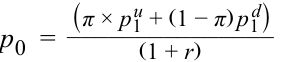
p 0 = (0.47 × €0 + 0.53 × €5.27)/(1 + 0.0037) = €2.79/1.0037 = €2.78.
- The correct answer is A. If the put option can be purchased for less than the no-arbitrage price, then a potential arbitrage opportunity is available. In this case, Kleinert’s clients should purchase the underpriced put option and buy h * units of SparCoin’s stock. The hedge ratio, h *, is calculated as:
- Đáp án đúng là A. Nếu quyền chọn bán có thể được mua với mức giá thấp hơn mức giá không kinh doanh chênh lệch giá, thì một cơ hội kinh doanh chênh lệch giá tiềm năng đang hiện hữu. Trong trường hợp này, khách hàng của Kleinert nên mua quyền chọn bán đang bị định giá thấp (underpriced) và mua $h^*$ đơn vị cổ phiếu của SparCoin. Tỷ số phòng ngừa rủi ro, $h^*$, được tính như sau:
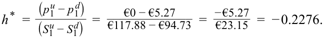
Note that the negative hedge ratio implies that both the put option and underlying are purchased or sold to create a hedge. This initial purchase of the put option and stock will cost:
Lưu ý rằng tỷ số phòng ngừa rủi ro mang dấu âm hàm ý rằng cả quyền chọn bán và tài sản cơ sở đều được mua (hoặc cùng được bán) để tạo ra vị thế phòng ngừa rủi ro. Giao dịch mua ban đầu đối với quyền chọn bán và cổ phiếu này sẽ có chi phí là:
€2.50 + 0.2276 × €105.25 = €26.45.
Should the stock price decrease, the value of this portfolio will be:
Nếu giá cổ phiếu giảm xuống, giá trị của danh mục đầu tư này sẽ là:
V 1 = V 1d = h* S 1d + p 1d = 0.2276 × €94.73 + €5.27 = €26.83.
The strategy generates a risk-free return of (€26.83 – €26.45)/€26.45 = 1.44%, which is greater than the 0.37% return on other available risk-free investments.
Chiến lược này tạo ra tỷ suất sinh lợi phi rủi ro là $(\text{€26,83} - \text{€26,45}) / \text{€26,45} = 1,44\%$, cao hơn mức lợi suất 0,37% trên các khoản đầu tư phi rủi ro hiện có khác.
-
The correct answer is C. Rising interest rates reduce the value of a put option. Increasing the risk-free rate will increase the risk-neutral probability of a price increase π and decrease the present value of the expected option payoff. Since the value of a put option is inversely related to the price of the underlying asset, an increased probability of an upward price move will reduce the expected payoff from the put. Consequently, both of these effects will reduce the put option value as the return on risk-free investments increases.
-
The correct answer is B. A 24% (previously 12%) increase in the stock price gives:
-
Đáp án đúng là C. Lãi suất tăng lên làm giảm giá trị của một quyền chọn bán. Việc tăng lãi suất phi rủi ro sẽ làm tăng xác suất trung lập với rủi ro của một sự tăng giá $\pi$ và làm giảm giá trị hiện tại của kết quả thanh toán quyền chọn dự kiến. Vì giá trị của một quyền chọn bán có mối quan hệ nghịch biến với giá của tài sản cơ sở, xác suất biến động tăng giá cao hơn sẽ làm giảm kết quả thanh toán kỳ vọng từ quyền chọn bán. Do đó, cả hai tác động này sẽ cùng làm giảm giá trị quyền chọn bán khi tỷ suất sinh lợi trên các khoản đầu tư phi rủi ro tăng lên.
-
Đáp án đúng là B. Mức tăng 24% (trước đây là 12%) của giá cổ phiếu mang lại:
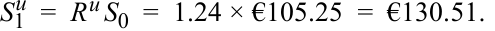
The put option will expire unexercised:
Quyền chọn bán sẽ hết hạn mà không được thực hiện:
p 1u = Max (0, X − S 1u ) = Max (0, €100.00 − €130.51) = €0. Alternatively, a 20% (previously 10%) decrease gives:
Ngược lại, mức giảm 20% (trước đây là 10%) mang lại:
S 1d = Rd S 0 = 0.8 × €105.25 = €84.20. The put option will pay off:
Quyền chọn bán sẽ có kết quả thanh toán là:
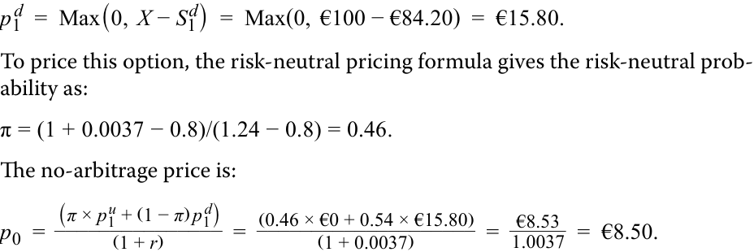
Để định giá quyền chọn này, công thức định giá trung lập với rủi ro cho biết xác suất trung lập với rủi ro là:
Mức giá không kinh doanh chênh lệch giá là: